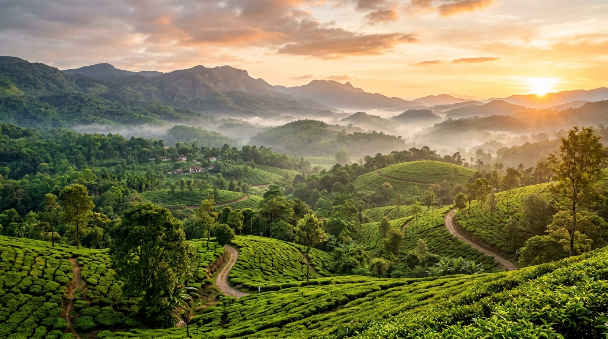
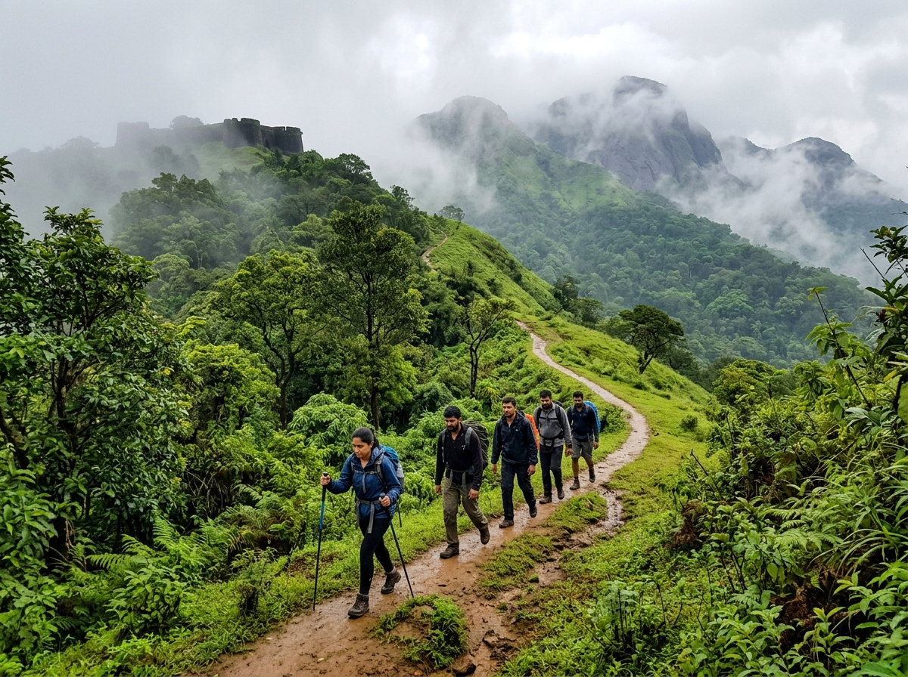
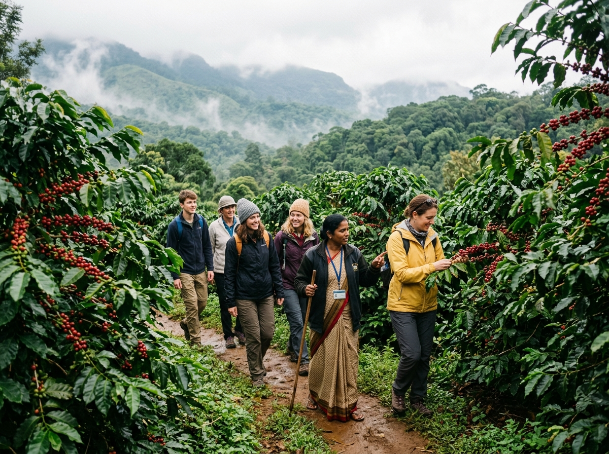
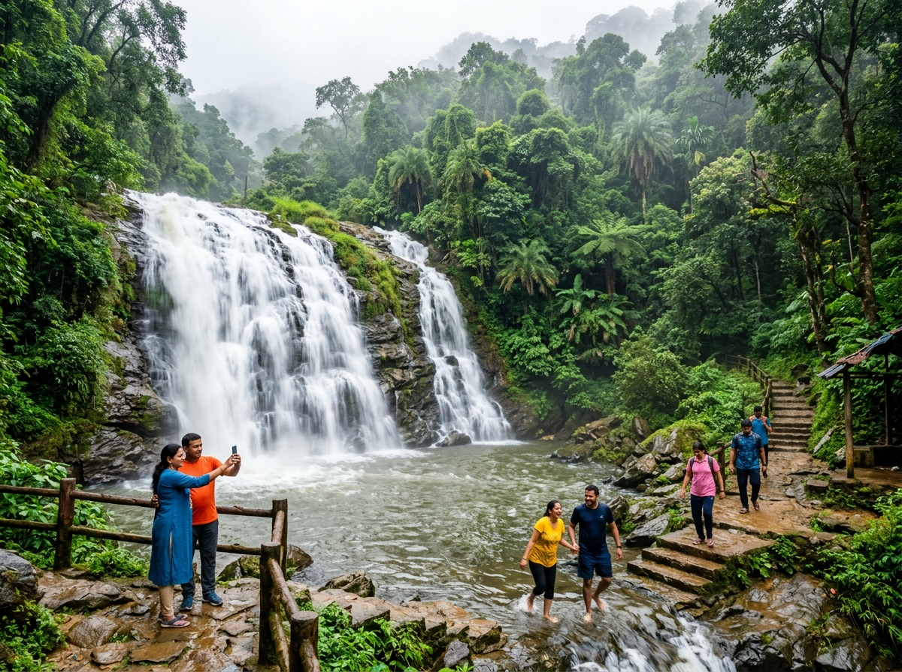

Welcome to Sakleshpur Explorer! Discover • Explore • Experience

Sakleshpur is a beautiful hill station located in the Hassan district of Karnataka. It is surrounded by the magnificent Western Ghats and is known for its lush green landscapes, coffee plantations, misty hills and rich biodiversity.

Sakleshpur is one of the best trekking destinations in Karnataka. The trails pass through dense forests, misty hills and scenic landscapes.

Sakleshpur is one of Karnataka's top coffee growing regions. Visitors can explore the beautiful coffee estates and learn about the process of growing and harvesting coffee.

Sakleshpur has many beautiful waterfalls surrounded by lush green forests. It is a perfect place to enjoy nature, take photos and relax.
Sakleshpur is widely known for its green forests and coffee estates.
Many people call it the "Green Paradise of Karnataka."
It is surrounded by the beautiful Western Ghats mountains.
| Time | Activity |
|---|---|
| 07:00 AM | Breakfast - Akki Roti & Filter Coffee |
| 08:30 AM | Visit Manjarabad Fort |
| 11:00 AM | Coffee Plantation Tour |
| 01:00 PM | Lunch - Ragi Mudde & Curry |
| 02:30 PM | Visit Bisle Ghat & Waterfall |
| 05:00 PM | Jenukallu Gudda Sunset View |
| 07:00 PM | Dinner at Local Restaurant |
Average temperature: 15°C - 30°C
Sakleshpur receives heavy rainfall during the monsoon season (June - September).
Best time to visit: October to February for pleasant weather.
"Travel is not just about seeing new places, it is about experiencing them."
Explore Sakleshpur
Discover something new every day!
© 2026 Sakleshpur Explorer